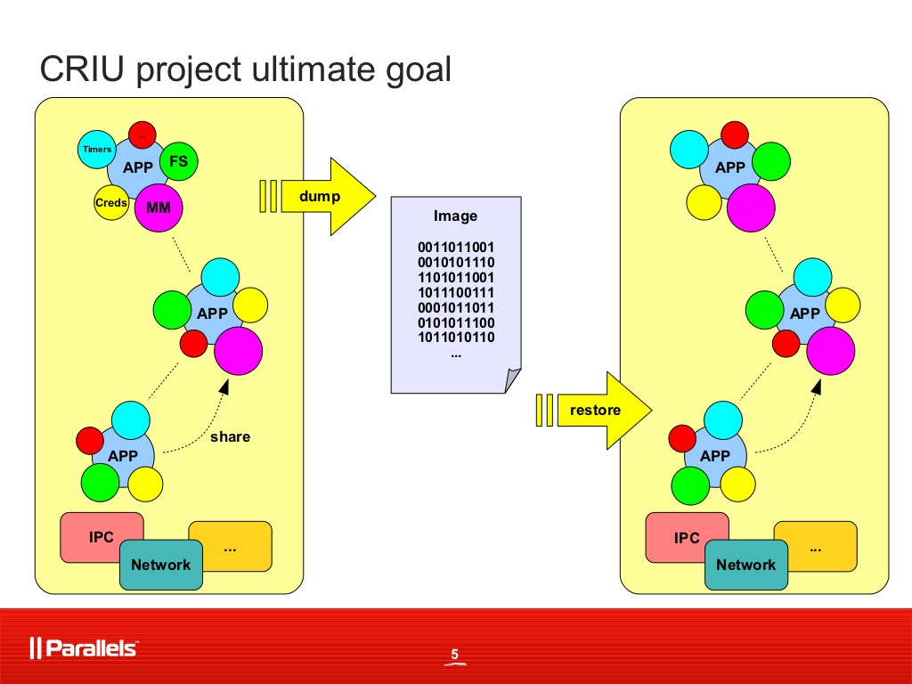

1 Pyramids of the World
1.0.1 Djoser - Stepped
1.0.2 Meidum - Collapsed

1.0.3 Bent Pyramid
1.0.4 Great Pyramid of Giza - Success

2 The Testing Pyramid
2.0.1 Pyramid

2.0.2 Teardrop
2.0.3 Onion
2.0.4 Spinning Top
2.0.5 So…
- sharp boundary, above which tests decay
- microservices push boundary down further
- pyramid collapses into its base
- it'd be nice if…
- mid-range testing: cheaper!
- external resources: more like CLR!
3 Process Wrangling
3.1 Camel Market

3.2 Ready to Ride
3.3 Docker
- each process in its own little world: isolated
- environments made up of immutable layers: reproducible
- well-used tooling hiding complexities of deployment: convenient
potentially, very realistic
3.4 SqlServer, on Docker
- ported to Linux by Microsoft in 2017
- free for non-production use
- nestled inside experimental Drawbridge process - like a small enclave of virtual Windows
- so SqlServer inside Drawbridge inside Docker inside…
3.5 Demo
3.6 Convenient but slow-ish
4 The Mirage
4.1 CRIU: Checkpoint/Restore
- freezes and unfreezes entire groups of processes, all at once!
- main use case: live migrations between hosts
- but - can be used for fast bootups too
4.2 
4.3 Demo
4.4 Pretty Fast